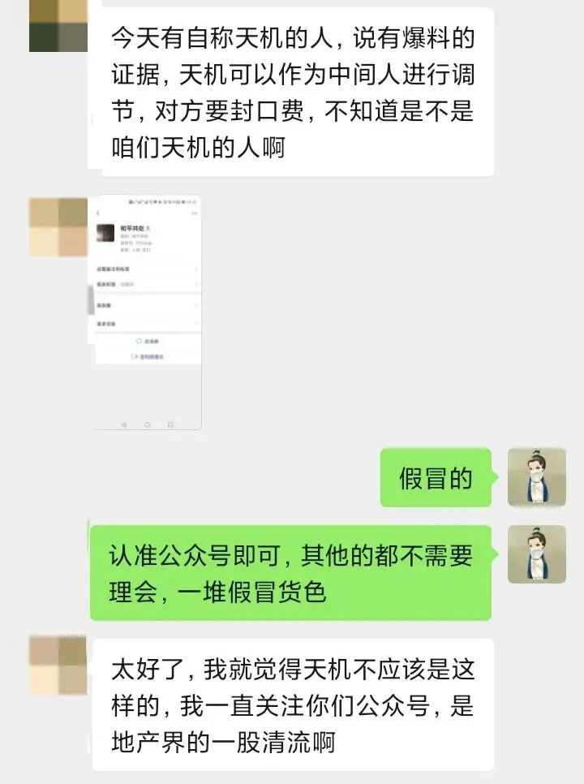
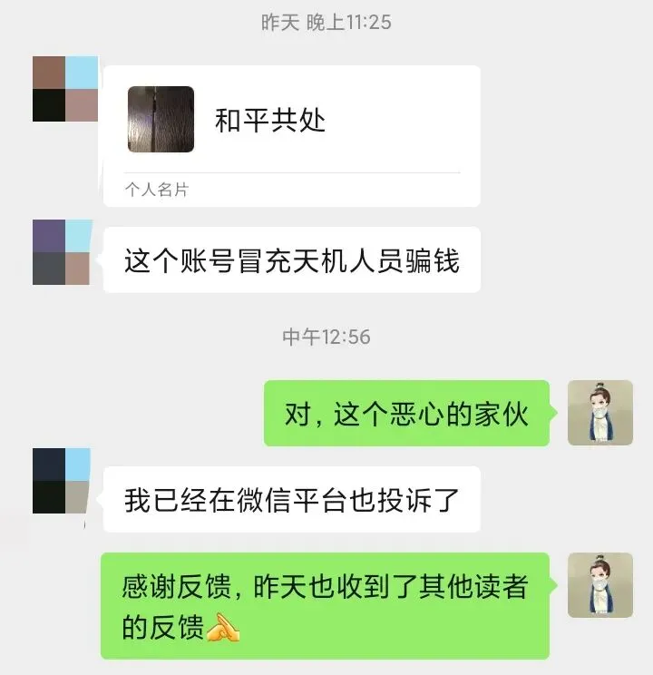

从中梁反腐看索贿门道碧桂园调整猎头供应商管理
从中梁反腐看索贿门道，碧桂园调整猎头供应商管理
今天的文章写得比较晚。
NO. 1｜壹
在文章开始之前，有个重要的事需要先跟大家说。
最近冒充天机的人越来越多，请大家认准公众号，文末左下角”阅读原文“内，有 重要通知 。
自从写文章得罪和涉及的人越来越多，各种牛鬼蛇神都冒出来了，想着法子搞咱，需要大家提高辨识和警惕。
再次重申，天机的公众号有且只有三个：天机奇谈、地产天机、地产玄机。其他的都是假冒的李鬼。
此前已多次提醒，今天再次提醒的原因是，这两天接到读者们的反馈，又有人冒充天机四处乱搞了：


作为公众人物，天机只能尽力提醒大家：
提高警惕，有任何人自称天机，私下沟通、任何涉及钱的事，请及时投诉或报警。咱肯定不会干这种事，没那么傻，咱可不想进去吃社会主义大锅饭。
咱从不主动联系读者，你们发信息，才会被动回复，属于被动触发技能，非主动技能，有主动联系的天机肯定是假冒的；其次，一定认准公众号平台； 目前市面上 以天机名义或头像开设的知识星球，都是冒牌货。
以后遇到这类自称天机的冒牌货色，请把这篇文章甩他B脸上。
NO. 2｜贰
4月21日，中梁集团发布中梁控监（2021）2号文件。
据文件内容称，中梁原京东区域公司研发设计负责人熊鼎铭，于2020年4月-2021年3月任职期间，利用职务便利，为供应商谋取不正当利益，损公肥私，并收受多家供应商 大额贿赂 。
熊鼎铭被中梁开除处分，罚没跟投收益及成就共享，并移送司法机关，目前已被采取刑事强制措施。
大额 回扣具体是多少，中梁没有透露 ，但也可以大致估算：在房地产行业，研发设计主要贪腐的方式，是供应商入库，拿回扣，行业默认的平均回扣点数约为5%，再乘这段期间的研发设计相关费用支出。
而工程建设等水深的板块，默认的平均回扣点数约1-1.5%，胜在总金额大。
一般来说，甲方（受贿人）贪腐，要么供应商收取回扣，要么自己搞马甲，套取公司资金。
受贿的方式五花八门，常见的就是收现金、汇款到受贿人指定账户；其次是供应商把钱存到个人或他们卡上，将卡交给受贿人，由其消费或通过POS机套现；或受贿人到某消费场所，让供应商过来充值或买单......
金额大点需要隐蔽的，受贿人去买房，由供应商来付首付款或全款； 或 带到指定的茶叶店等消费场所，以照顾生意的名义，高额消费，再由消费场所将费用给受贿人；
或者，供应商约受贿人打牌，以输牌的形式，将回扣给到受贿人；甚至于，有买好比特币等数字货币（去中心化，且隐蔽），将其交由受贿人。
NO. 3｜叁
而整个链条中，最关键的一个环节，是供应商入库中索贿的门道。
一般来说，大致有六种方式：
第一类是限制法。所谓的限制法，是在众多的供应商中，掺入一些自己已经私下谈好回扣的供应商，或者自己别他人名字注册的公司（马甲）。
然后一并上报给决策部门，放大关联供应商或马甲的优势，掩盖劣势，并放大其他竞争对手的劣势。 这种方式非常可怕，基本上没有办法可以制止 ，也是目前房企 供应商入库中，最常见的。
第二类是高低差价法。私下先和供应商谈好底价，如1000万，然后1100万上报集团并成功突围，那么回扣就是100万。
第三类是同价异品法。 即给集团决策部门看的样品是A级产品，但供应时，用的是看 起 来一模一样，质量等却略逊的B级产品，将B级的产品以A级的价格采购，中间的差价......
和同价异品法相似的还有以次充好法、以假乱真法。
第四类是提成法。这种就很业务线作风，根据绩效来决定受贿金额的大小。和供应商谈好提成的提成点数，如1000万的总金额，5%的提成点数，那就是50万。
第五类是胆大包天法。这类方式，一般胆子很肥的人才敢干，特别是在市场普遍涨价的情况下，供应商没打算涨价时，受贿人主动让供应商涨价，而涨价的部分，自然就成了回扣，被受贿人拿走。
第六类是拖延货款法。这类是最恶心也是最常见的。受贿人若手握权力，迟迟不给供应商货款，但也没明说不付款，就是拖着，消极拖沓的态度对待供应商的回款问题。
其实就是想逼着供应商花钱打点，给回扣，才肯批复回款； 或拿到了回扣，才积极推进对账事宜， 安排 回款。
此中 门道之多，只有经历了社会毒打的人才能体会， 能写出来的，不过九牛一毛 。
NO. 4｜肆
4月22日，碧桂园集团就发了集团字（2021）53号文件，《碧桂园集团猎头服务供应商管理办法》的通知。
从碧桂园的《猎头供应商服务合同》中规定， 总监级 及以上 或研发 类高难度岗位方可使用猎头服务 。
猎头服务费的点数，候选人年固定薪酬在300万元以下（含300万）为22%；候选人年固定薪酬在300万元以上的，猎头服务费固定为60万元。
此外，还有个猎头激励服务费，根据候选人的级别不同，分为5000元和2000元两档。
《碧桂园的猎头供应商管理办法》提到，坚持业绩导向原则，对猎头供应商实际达成业绩结果进行客观评估，实行优胜劣汰。
而全面评估原则，则是从整个服务评估周期内的综合表现来判断，对猎头供应商的业绩和服务满意度，通过 集体商议 的方式进行评估。
评估组常设5人，其中集团人才管理部3人，相关人力负责人2人。
根据猎头供应商的业绩评估排名、合作服务年限两项，将排名前80%的猎头供应商划分为三档：
战略合作伙伴，服务费点数为23-25%，付款方式为7：3； 优秀合作伙伴，服务费点数为22-23%，付款方式同样为7：3 ；而普通合作伙伴的服务费点数为22%，付款方式为6：4.
而排名后20%的猎头供应商，将终止合作。
此外，还规定了猎头供应商的管理红线，即统一招标、需主动汇报并回避亲属关系、严禁猎头供应商挖角碧桂园员工等。
看来看去，好像还是少了点什么。建议 碧桂园：
别只顾着规范猎头供应商，更应该健全自身内部监督和追责机制。认真研究研究华夏幸福和泰禾集团，以他人之史为镜。毕竟：攘外先安内。
若是支持，请文末右下角 **“点赞、在看 ** ”，也可及时收到公众号的更新信息。
按日期浏览全部来源（同日按条目标识排序）